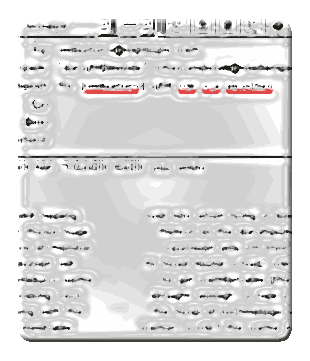

|
From: |
data]h![bleede
|
|
Date: |
Tuesday, April 18, 2000 12:55
AM |

At 04:26 PM 17/04/00 -0400, you wrote:
___________________________________________________
11:58> chrom[atic stretchez in2 ether]e.box1[maile in2 hear? i think
sew] <
Today's Mes-sages n-cluded 2 messages which did not show uppe amonge mi
[g]New Messages on the left side of the board:
1) a message posted in [wo]mani.pul[l N pushe of textuallnezz]ates traffic
sig[hz]n.allz
2) a message posted in
When the Today's Mez-sages re[ar]fresh[N sparked]ed at mid[dle n beginnin
N
ende]night, theze dis.appear[ances n cordz ov strandez, meaning tuglinez]ed
along with the rest.
< 12:01
tinkle of glass faintly like something you hear when >
Both messages r still absent from my New Messages.
< 12:02
machine drowns everything out the
machine message appeared marked as new on the All
Messages screen. >
Prose message still absent.
< 12:03
ladders up and down the side fans and ducts and
message appeared on my New Messages screen.
Prose message still absent. >
< 12:00
ch[ange the]Rom.ebox1.sw[i]f[tlee nowe] [f.[back]lash 4 [for] teXt
dis.splay[N guttered] + speak.hers ON]
Prose message still absent on my New Messages.
Marked NEW on All
Messages. >
______________________________________________________
|